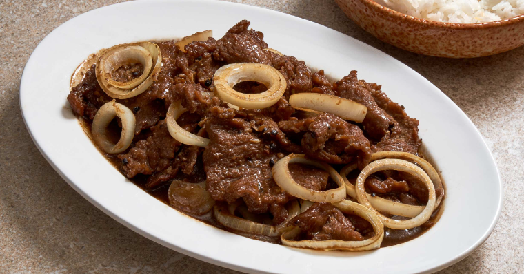

Bistek Tagalog

Description
Bistek Tagalog is a Filipino dish consisting of thinly-sliced beefsteak braised in soy sauce, calamansi juice,
garlic, ground black pepper, and onions cut into rings.
It is a common staple in the Tagalog and Western Visayan regions of the Philippines.
It is eaten over white rice.
Ingredients
- 1/2 cup soy sauce
- 1/4 cup kalamansi juice
- 3 cloves garlic, smashed
- 2 teaspoons white sugar
- 1 teaspoon fish sauce (Optional)
- ground black pepper to taste
- 1 pound beef steak, sliced 1/4 inch thick
- 2 tablespoons vegetable oil, divided, or as needed
- 4 potatoes, cut into wedges (Optional)
- 1 large onion, cut into rings
- 1/8 cup water (Optional)
Steps
- Combine soy sauce, calamansi juice, garlic, sugar, fish sauce, and pepper in a bowl.
Taste and adjust to your liking. Add sliced beef, making sure it is coated evenly.
Marinate for at least 30 minutes or up to 1 hour.
- Heat 1 tablespoon oil in a wok or pan over medium-high heat. Fry potatoes in the
hot oil until the edges turn golden brown. 7 to 10 minutes. Transfer to a plate.
- Heat remaining oil in the same pan over medium-high heat and fry onions until edges turn brown, 7 to 10 minutes.
Transfer to the same plate.
- Heat the same pan over medium-high heat.
Reserve marinade and fry beef in batches, adding more vegetable oil if necessary,
until browned and no longer pink in the centers, 5 to 7 minutes.
Transfer to the plate and continue with remaining beef.
- Pour reserved marinade into the pan with water to deglaze,
scraping up browned bits from the bottom of the pan using a wooden spoon.
Taste and adjust seasonings. Return beef back to the pan with some onion,
leaving remaining onion for garnish; reduce heat and let simmer until sauce has thickened,
7 to 10 minutes.
- Slide beef and sauce onto a serving plate.
Garnish with remaining onion. Place potatoes on the side and serve.